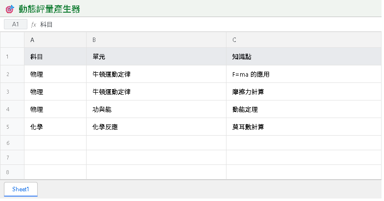
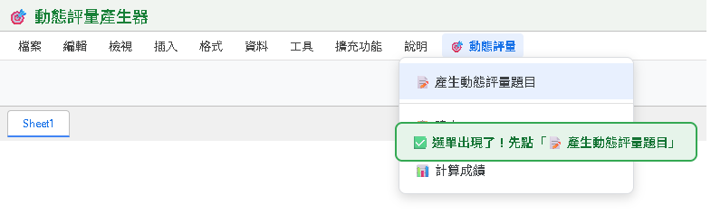
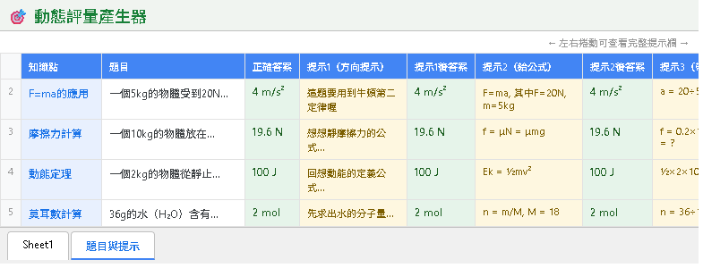
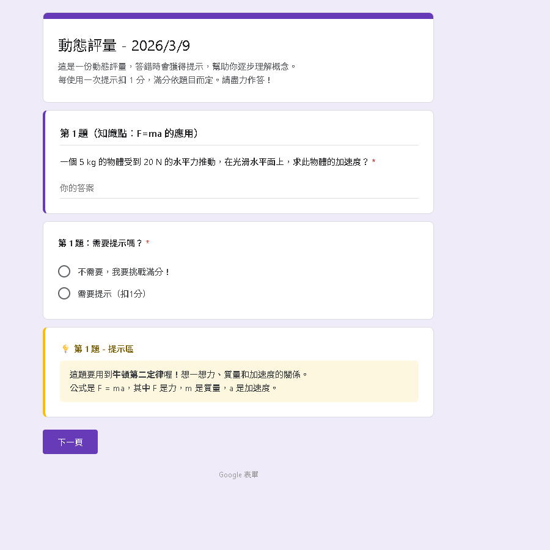

Vygotsky 的「最近發展區」理論 — 在學生快要會、還不太會的地方給予引導
四個步驟，從知識點到完整的分支式表單
A 欄：科目、B 欄：單元、C 欄：知識點物理 ｜ 牛頓運動定律 ｜ F = ma 的應用

擴充功能 → Apps Script，開啟程式碼編輯器專案設定 → 拉到最下方 指令碼屬性 → 新增指令碼屬性GEMINI_API_KEY 值：貼上你的 API Key
編輯器 → 全選 Ctrl + A → 刪除 → 貼上工具 2 程式碼 → Ctrl + S 儲存▶ 執行 → 函式選 onOpen → 點「執行」→ 完成 Google 帳號授權
好的 Prompt 決定了題目品質 — 以下是三個設計重點
提示 1 = 方向提示（想想哪個概念有關）
提示 2 = 給公式（相關公式是什麼）
提示 3 = 帶數字（把數字代進去）
從抽象到具體，逐步降低難度
AI 被要求產出 50-80 字的應用題，題目要有具體情境和數據。
✅ 一個 2kg 的物體受 10N 力作用...
❌ 請解釋什麼是加速度
提示 3 會給公式和數字，但不會直接給答案。
學生仍需自己完成最後的計算步驟，確保「做中學」而非「看答案」。
🎯 動態評量 → 📝 產生動態評量題目
🎯 動態評量 → 📋 建立 Google Form
學生打開表單後的完整作答流程
同一份評量，自動適應不同程度的學生
0 個提示直接答對
→ 5 分
💪 獲得挑戰感，證明自己能力
🏆 題目夠有深度，不會覺得太簡單
1-2 個提示後答對
→ 3-4 分
🤝 有引導就會，建立信心
📖 透過提示發現自己「其實快會了」
3 個提示後才答對
→ 1 分
✅ 至少學到完整解題過程
💪 不再是零分，保有勝任感
複製以下提示詞，貼到 Gemini / ChatGPT / Claude，即可取得完整程式碼：
請幫我寫一個 Google Apps Script（GAS），功能是「動態評量產生器」。
需求：
1. 在 Google Sheets 中建立自訂選單「🎯 動態評量」，含三個功能：
- 產生動態評量題目
- 建立 Google Form
- 使用說明
2. 使用者在 Sheet1 填入：A 欄=科目、B 欄=單元、C 欄=知識點
3. 呼叫 Gemini API（gemini-3-flash-preview）為每個知識點產生：
- 一道應用題（含具體數字，50-80 字）
- 正確答案
- 三層漸進式提示：
提示 1 = 只給方向（不給公式）
提示 2 = 給出公式
提示 3 = 帶入數字（但不算出最終答案）
- 每層提示後的預期答案
4. 結果寫入「題目與提示」工作表
5. 「建立 Google Form」功能：
- 自動建立 Google Form
- 每題一個 Section
- 每個提示後都有「需要下一個提示嗎？」的分支選項
6. 計分邏輯：不用提示=5分、1個提示=4分、2個=3分、3個=1分
技術要求：
- API Key 存在指令碼屬性 GEMINI_API_KEY
- temperature: 0.3
- JSON 格式回傳
- 包含錯誤處理現在輪到你了！為你的科目製作一份動態評量